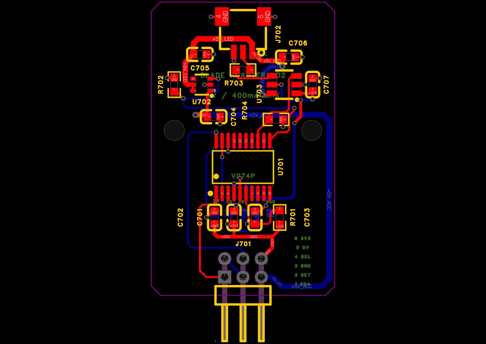

器灵内核 · 2026-10-25 · V0.7.4P3
完成板级整改，交付首版电气验证打样包
已同步并保存到嘉立创。重点修复功放5V长距离绕行、局部去耦和覆铜细颈，清理冗余过孔；另外独立解析实际Gerber，核对短路与网络连通。全程未使用自动布线。
0 / 0主板／适配板原生DRC
0Gerber跨网短接与断网
411 → 373主板过孔数量
128 + 16两板实装器件，C114不贴
本包适合首版板级验证，不代表整机实物已通过。用户实屏FPC、NFC/电池线束针序未确认前先不连接；工厂须确认最终USB阻抗/叠层并完成裸板电测。旧壳体STL尚未同步当前孔位。
本轮改动
功放C13/C14改为就地去耦；移除旧5V绕行，L3划出约71.63mm²直接供电铜区，并为三处瓶颈增加短铜线加强段。清理过孔与回折线，主板现在1793段走线、373个过孔。
主控仍在正面最下端、天线向下；J7、NFC、四凸耳孔位和外形保持。只有C13/C14的封装位姿改变，适配板、电路值和USB走线保留。
铜区直流近似：按工程内层铜15.19μm，L3功放支路约0.053–0.060Ω，0.4A时约21–24mV。未含过孔、地回流、温升及瞬态，不是整机载流认证；J7预算仍为400mA。
实际分层铜区

橙色5V，紫色3.3V，绿色GND。图从顶面向下看，底层没有镜像；点击可放大。内层可见贯穿过孔焊盘，不能把这些焊盘误认为该层信号走线。
检查结果
| 原生DRC／未连接 | 主板0／0；适配板0／0 |
|---|
| Gerber跨网短接／断网 | 两板均0；全部带网焊盘与过孔有铜 |
|---|
| 原理图↔PCB引脚网表 | 主板129件、适配板16件，一致 |
|---|
| 元件重叠／间距 | 同面包络重叠0；最小间隔0.218mm |
|---|
| 四层约束 | L2连续地；L3信号走线0 |
|---|
| 板框／孔／天线 | 原有尺寸、四凸耳与天线方向保留；禁铜检查通过 |
|---|
| 角度／布线间距 | 非45°线段0，普通非135°折角0，间距错误0 |
|---|
| 导出／钻孔／贴装 | 原生与导出核对通过；主板C114不贴 |
|---|
检查覆盖当前设计与已导出的制造文件。原理图4条UART/SWD单端调试网提示已逐项解释，对应PCB测试焊盘连通；不是隐瞒ERC警告。普通折角检查排除焊盘内部、分支和微小归一化短线。
贴装与接口要点
贴装使用 *_BOM_upload.csv 与 *_CPL_upload.csv；它们采用标准UTF-8 CSV，主板已剔除C114。原生导出另保留追溯，实际为UTF-16制表符格式。J7/J701是通孔连接器，安排插件/手焊。
J7→J701针号映射：1→5、2→6、3→3、4→4、5→1、6→2，不是同号相连。J201为自定义SCL/SDA/3V3/GND针序；电池J104为VBAT/GND/NTC。首板先限流测核心电源，再逐项加入已核对针序的外设。
GC9A01型号不能唯一确定屏幕12针FPC排列和接触面。实屏核对前不连接J8，背光R39也应按实屏额定值确认。适配板仍需测试固件；不会仅凭PCB通过就宣称灯带识别和灯效已经实现。
完整打样说明、边界与来源
器灵 PCB V0.7.4P3 打样前整改与放行记录
2026-10-25｜主板 V074P3 + 剑身适配板 V0.2
结论
本轮已完成板级可检查问题的整改，并生成首版电气验证打样包。两块板原生 DRC 均为0；独立检查实际 Gerber 的铜区、焊盘、过孔及跨层连接，未检出跨网络短接、漏接或断网。没有使用自动布线工具，也没有下单。
这是板级工程样验证放行，不代表已接过实屏、实测温升或整机量产验收。屏幕/线束针序未确认前，首板先不连接这些外设。USB阻抗必须由板厂依据最终叠层确认，不能用等长代替阻抗验证。
当前原生工程
项目名保留：Spirit_V074N_Manual_Routed_Final_20261025
项目UUID：3f352afa1c134bfda38c18fe4b2307f1
主板UUID：5354a7bf4c630a18；丝印 V074P3
适配板UUID：cff5d61a47594b34；保留 V0.2
已在嘉立创原生工程内保存，完整工程导出为 Spirit_V074P3_Prototype_Review_20261025.epro2。
最新用户授权替代先前“仅评估、暂不修改”：本轮开始重新读取了原生工程并完整备份，未把历史布局直接覆盖到当前工程。
实际修改
1. 主板过孔 411→373，净减少38个；其中删除31个已验证只接单个走线层的冗余非供电过孔，另清理旧5V绕行/去耦过孔并补充必要局部连接。
2. C13横向移近功放、C14旋转180°，VDD在底层就地连接到U4，地脚就近连接。C113没有移动；没有改元件值或新增元件。
3. 移除功放5V从板上方绕左侧边缘下来的长线，在L3增加直接向下的5V铜区；保留向上至U112/J7的支路。J3是扬声器差分输出，并非5V输入，本次无需移动J3。
4. 重铺铜发现3V3断点后调整分区边界；再对实际铜区检查发现DRC未报告的细颈，增加3处明确选定路径的短加强段（0.30/0.35mm），不是自动寻路。最终5V供电不再依赖极细的铜皮连接。
5. 修正局部回折线和折角；仅C13、C14的封装位姿改变。其余元件布局、接口朝向、四凸耳孔位、板框、网表、电路值、USB走线保留。
6. 保持4层：L1顶层信号，L2连续GND且无走线，L3仅电源及USB局部地参考，L4底层信号。ESP32-S3仍在正面最下端、天线朝下伸出；NFC接口仍在背面。
实测于文件的检查结果
主板：129个元件（128实装，C114不贴），1793段走线，373个过孔。
适配板：16个元件，148段原生有效走线，31个过孔；本轮没有修改其电路/布局/布线。
两板：原生DRC 0、网络未连接0、独立跨网铜几何相交0、原理图/PCB逐引脚网表不一致0、同面元件包络重叠0、走线间距错误0、非45°有效线段0、普通非135°折角0。
主板最小元件包络间距约0.218mm，适配板约0.550mm；这不替代贴片厂实际装配公差评估。
L2接地铜主体为单一连续区域，约2274.47mm²；L3非电源走线0。孔周铜间距、板边及天线伸出区禁铜检查通过。
主板最小线宽0.127mm；最小过孔焊盘0.45mm、孔0.20mm。适配板最小线宽0.18mm，最小过孔0.50/0.30mm。采用常规1oz外层/约0.5oz内层范围进行制造评估，具体成品铜厚由工厂确认。
实际Gerber逐层解析：所有预期带网焊盘/过孔都有铜；同一导电铜区没有混入两个网络；合并贯穿过孔后所有网络均连通。主板373个、适配板31个过孔的钻孔坐标与原生一致。板框与原生轮廓差异小于0.000002mm。
主板原生导出与回读一致。适配板导出保留4条既有归一化短线（每条≤0.00105mm），均完全被同网既有铜覆盖，已核对没有新几何/电气变化。
原理图保留4条已解释的单端调试网提示：主板UART RX/TX、适配板SWDIO/SWCLK；对应PCB裸测试焊盘均连通。没有通过关闭规则或删除调试功能来伪造ERC归零。
表层辅助解析另有3片不携带器件/过孔/走线的孤立铜片；原生keepIsland=false保留。这些不形成跨网短路，不把“全部表层铜均为同一地块”列为通过项。
5V评估
新增5V覆铜主体约71.63mm²，另有短线加强段。对实际L3铜区按工程内层铜15.19μm、20℃铜电阻率建立直流片电阻模型：0.10/0.05mm网格给出约0.060/0.053Ω，功放支路0.4A下该段约21–24mV。该数仅为L3铜区近似值，未包含过孔、表层连接、回流、电源IC、温升和瞬态；不是IPC载流或温升认证。
此前约80mm的绕行供电已移除。5V供电改善不增加J7的允许功率：附件首版仍按5V总预算400mA、3V3逻辑≤50mA；TPS2553限流约520mA典型。TPS61023的3.7A是开关限流，不是5V输出可持续3.7A。
USB默认电流档与Type-C高电流识别逻辑保留；电池低电量、音频高音量与附件同时工作仍需测试，禁止把铜区改善等同于整机功率已实测。
文件使用
- Main_V074P3_Gerber.zip：主板，必须按4层制造；含钻孔与飞针数据。
- Adapter_V02_Gerber.zip：适配板，2层；不要把两个压缩包混作同一块板。
- *_IPC.356a：裸板电测网络文件；要求工厂进行开短路电测。
- *_BOM_upload.csv / *_CPL_upload.csv：UTF-8标准CSV，作为贴装导入文件。主板C114已从贴装坐标中剔除，BOM与坐标均为128实装；适配板16实装。
- 原生 *_BOM.csv / *_CPL.csv：保留嘉立创原始字节，实际为UTF-16制表符格式，作为追溯用。原生CPL含DNP元件C114，勿直接按全量贴装。
- C114不贴装；钢网/贴片确认时屏蔽其锡膏开口。J7/J701为通孔连接器，按工艺另做插件/手焊；贴片厂仍须核对IC引脚1、连接器方向及底面旋转。
- 修改前原生备份.epro2：本轮开始时实际工程备份。
- Gerber内包含丝印、阻焊和锡膏层；没有向板厂上传、支付或下单。
制造要求
建议首版少量板级样，FR4，主板4层1.6mm，适配板2层按既有1.6mm结构；主板层序严格Top/GND/Power/Bottom。外层1oz，内层至少约0.5oz。绿色阻焊、沉金适合本板细间距焊盘；不要无确认改为2oz外铜。最小孔0.20mm，过孔双面盖油按Gerber执行；不能封住连接器镀铜孔或改动NPTH。
USB_DP/DM要求90Ω差分±10%：主路径宽0.254mm，局部扇出0.18mm；既有参考层/等长路径未改。请板厂按实际叠层核算并确认；若需调整线宽/间距，回到工程修改后重新DRC、重导出，不在最终Gerber上私改网络或层序。当前文件没有板厂受控阻抗回执，不标注“阻抗已通过”。
板框凸耳采用完整铣边，4个M2安装孔直径2.2mm，孔距38×61.5mm；尼龙螺丝/塑料柱约束保留。旧STL未同步到当前四凸耳及J7横插结构，不能直接用作装配验收模型。
制造能力依据：嘉立创公开工艺参数 https://www.jlc.com/portal/vtechnology.html
USB叠层确认依据：https://jlcpcb.com/impedance
外接接口与首板边界
J104：1电池正(VBAT_PROT)，2GND，3NTC；必须为带保护1S锂电池及匹配温度检测线束，禁止凭线色接电池。
J201：1SCL，2SDA，3为3V3，4GND；自定义针序，不能直接当Qwiic线束。
J8：1GND，2背光负端（PWM控制），3背光正，4LCD_VCC，5/6GND，7DC，8CS，9SCK，10MOSI，11RST，12GND；GC9A01只是控制器型号，不唯一决定FPC针序。用户实屏针序、接触面和背光额定参数未提供，未匹配前不连接屏幕，R39=10Ω不能作为任意GC9A01屏的通用值。
J7：1=5V_ACC，2=3V3，3=GND，4=SCL，5=SDA，6=DET_N。J7→J701配对关系为1→5、2→6、3→3、4→4、5→1、6→2，勿按同编号直连；首板用万用表逐针确认机械插合后的电源极性。接口不能承担剑身机械载荷，首次测试断电插拔。
J3为SPK±，J110为LRA差分输出，两者负端都不是GND；不要将负端接机壳地。
附件协议已定义（STM32本地控制/描述符识别），适配板固件尚需实现和烧录；本次交付没有伪称灯效/识别功能已实测。
首板上电顺序
1. 裸板接受工厂开短路电测。组装后先检查焊桥、芯片引脚1、USB口及电池座极性；断电测VBAT/USB5V/3V3/5V对GND。等待电容充电读数稳定，不能只凭蜂鸣器瞬间响判断短路。
2. 先不接电池、屏幕、NFC、LRA、扬声器和剑身。使用限流5V从USB端供电，先保持MCU复位检查输入/3V3，确认无异常电流和发热后再释放复位。低限流可能使ESP启动复位，不能将其直接归为电路故障。
3. 烧录最小测试固件，分别验证3V3、5V使能、长按开关、USB、IMU、触摸、麦克风；再单项接入经核对针序的外设。
4. 先假负载再实际负载，测附件端5V、U4端5V、MCU3V3及USB拔插/低电池/高音量并发工况的跌落、温升。附件保持400mA预算，分阶段增加音量/亮度。
5. 屏幕、NFC、真实线束、RF和结构试装通过后，才评价整机可用性。本包不保证焊接制造绝无缺陷；其范围是可复现的设计与制造数据检查。
原厂布局依据
TPS61023输入/输出回路与布局：https://www.ti.com/lit/ds/symlink/tps61023.pdf
MAX98357A本地100nF+10uF去耦与宽电源路径：https://www.analog.com/media/en/technical-documentation/data-sheets/max98357a-max98357b.pdf
ESP32-S3 USB/天线布局：https://docs.espressif.com/projects/esp-hardware-design-guidelines/en/latest/esp32s3/pcb-layout-design.html
工程SHA256：572d94bb44fdbe84181aff2ebd1585ee6ae7ee25309181fd1c0a610129a92d1a
嘉立创原生整板预览

